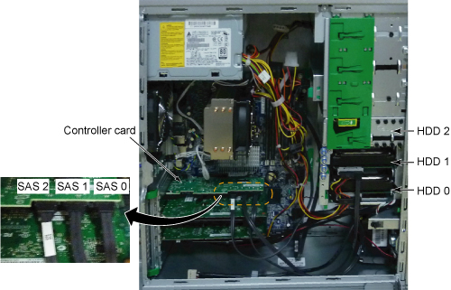
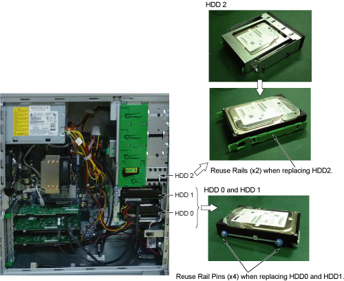

Operating Documentation
Direction 5670006, Rev# 1
Discovery MR750w GEM Service Methods
Module Version 1.0, Version Date 8/4/11
Operating Documentation |
The following information may assist in determining problems with the HP Z400 PC.
The only FRUs associated with the HP Z400 are the three (3) hard drives, DVD-RW drive, the Graphics card, Memory, and the actual PC.
| LED Status | LED Color | System Status |
|---|---|---|
| Solid | Blue | System is ON |
| Blinking | Blue | System is in Standby |
| Solid or Blinking | Red | System has error |
| None | No Light | System is in Hibernate or is OFF |
Power On Self Test (POST) is a series of diagnostic tests that runs automatically when the system is turned on. A visual message displays if the POST encounters a problem.
| Activity | Beeps | Possible Cause |
|---|---|---|
| Red Power LED blinks 2 times, every second, followed by a 2 second pause | 2 | Processor thermal protection activated: A fan may be blocked or not turning. Heatsink assembly may not be properly attached to the processor. |
| Red power LED blinks 3 times every second, followed by a 2 second pause. | 3 | CPU not installed |
| Red power LED blinks 4 times every second, followed by a 2 second pause. | 4 | Power failure, power supply is overloaded |
| Red power LED blinks 5 times every second, followed by a 2 second pause. | 5 | Pre-video memory error |
| Red power LED blinks 6 times every second, followed by a 2 second pause. | 6 | Pre-video graphics error |
| Red power LED blinks 7 times every second, followed by a 2 second pause. | 7 | System board failure (ROM detected failure prior to video) |
| Red power LED blinks 8 times every second, followed by a 2 second pause. | 8 | Invalid ROM based on bad checksum |
| Red power LED blinks 9 times every second, followed by a 2 second pause. | 9 | System powers on, but does not boot |
There are no jumpers required for configuring the disk drives on the HP Z400. Ensure that the drives are plugged into the correct ports on the controller card.
The SAS 0 output must connect to HDD 0 (lower) hard drive. This drive contains the application software.
The SAS 1 output must connect to HDD 1 (middle) hard drive. This drive contains image data.
The SAS 2 output must connect to HDD 2 (optical bay) hard drive. This drive contains image data.
Illustration 1: SAS Device Locations

| NOTE: | HDD0 and HDD1 are stored in the HDD slot and HDD2 is stored
in the optical bay. Please reuse rail or rail pins when replacing
HDD according to the Illustration 2. Illustration 2: Notice for Hard Disk replacement.  |